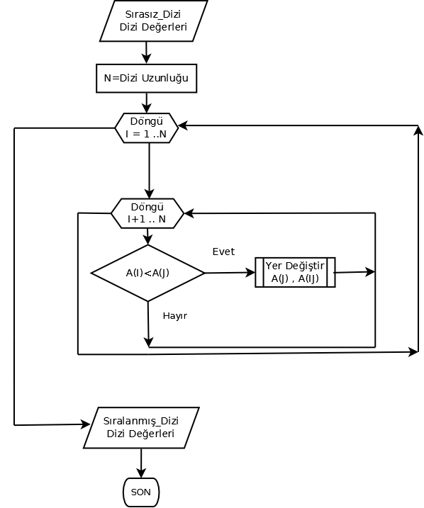
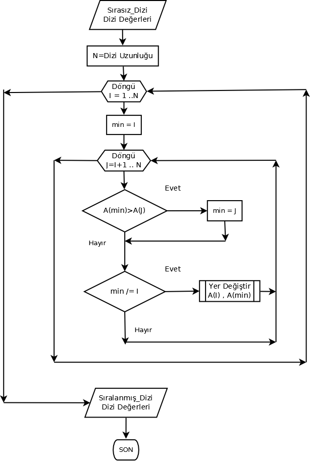

Ada Programlama Dili Temelleri
Bölüm 7
Bölüm 7 Sayfa 2
Bileşik Veri Tipleri
7.1.2 - Özgün (İsimli) Dizi Tipleri (Devam)
Dizi içeriklerinin sıralanması için, Seçmeli Sıralama(Selection Sort), Kabarcıklı Sıralamaya göre çok daha etkin bir sıralama yöntemi olarak tanınır. Tüm sıralama konuları gibi, Seçmeli Sıralama yöntemi üzerinde de birçok yayın bulunmaktadır. Bu konuda, Ada-Home (İsviçre) tarafından rekürsif bir yöntem tanımlanmıştır. Bu yöntemi ileride inceleyeceğiz. Uyguladığımız yöntem, Fred Schwartz tarafından verilmiş olan rekürsif olamayan yani kendi kendine çağırmayan yöntemdir. Bu yönteme göre,
Seçmeli Sıralama algoritmasının yürüyüşü, çok iyi hazırlanmış bir video kaynağından yararlanılarak FoxTab video dönüştürücüsü yardımı ile hareketli resim olarak hazırlanmıştır. Bu yürüyüş, yukarıdaki sıralama adımlarını görselleştirmektedir.
Şekil 7.1.2 - 6 : Seçmeli Sıralama (Selection Sort) Algoritmasının Yürüyüşü
İlk geçişte, listenin en büyük elemanının en başa geçirilmesi, aşağıda görüldüğü gibi gerçekleştirilebilir:
I .. N -1 e kadar döngü --dış döngü
J = I + 1 .. N e kadar döngü -- iç döngü
eğer Dizi(I) < Dizi(J) ise
Dizi(J) ile Dizi (I) yer değiştirir -- En büyük olan yukarı geçer
döngü sonu -- iç döngü
döngü sonu -- dış döngü
Seçmeli Sıralama yönteminde, toplam iterasyon sayısı 1 + 2 + 3 + ...+ (N - 2) + (N-1) = N2/2 - N/2 olarak belirlenmiştir. Eğer ve sabit ve küçük terimler gözardı edilirse, sonuç N2 olarak basitleştirilebilir. Seçmeli Sıralama yönteminin Güçlük Derecesi, büyük O notasyonu ile O(N2) olarak ifade edilir. Bu sonuç, Seçmeli Sıralama yönteminin en kötü durumda quadratik bir sistem yükü uyguladığını ifade eder. Seçmeli Sıralama yöntemi, yazma olayının okuma olayından daha fazla zaman kaybettirici olduğu sistemlerde daha etkilidir.
Seçmeli Sıralama yönteminde her dış döngü gerçekleştiğinde, dizinin en büyük elemanı kesinlikle döngüyü başlatan eleman sırasına taşınır. Bu şekilde bir sonraki iç döngü, bir alt eleman sırasından başlatılır. Örnek olarak, 3 , 4 , 5, 6 sayılarını içeren bir listeyi inceleyelim. Listenin eleman sayısı 6, serbestlık derecesi 6 - 1 = 5 dir. Burada, 5 dış döngü, 6 iç döngü, yani toplam 5 X 6 = 30 iterasyon gerçekleştirilecektir. Yani N X (N - 1) = 6 X 5 = 30 iterasyon yapacaktır. İlk dış döngü de Dizi(I) nin sırası Dizi(1) dir. Dizi(1)'in değeri, 3 dür. Bu değer ile iç döngü başlayacak ve, iç döngüde, 3 değeri sırası ile Dizi(I+1) yani ilk olarak Dizi(2) ile karşılaştırılacaktır. Burada 4 değeri 3 den büyük olduğundan, 4 ve 3 yer değiştirecek yani ilk adımda Dizi(1) değeri, 4 olacaktır. Sonra sırası ile 4 ve 5 , karşılaştırılarak 5 yine Dizi(1)' taşınacak, son olarak 5 ve 6 karşılaştırılarak 6 Dizi(1) taşınacak ve önce iç sonra da dış döngü tamamlanmış olacaktır. İlk dış döngü sonunda dizinin en büyük değeri olan 6 dizinin en başına taşınmış olmaktadır. İkinci dış döngüde, I değeri 2 dir ve iç döngü 3 den başlayacaktır. Dizi(2) değeri 4 dür ve sırası ile Dizi(3) ve sonrası tüm dizi elemanlarının değeri 4 ile karşılaştırılacak ve en büyük olan dizinin ikinci sırasına taşınacaktır. Bu şekilde toplam 30 iterasyon sonunda dizi 6 ,5 , 4 , 3 şeklinde sıralanmış olacaktır. Seçmeli Sıralama yönteminde, iterasyon sayısı dizinin ilk sıralanma şekline bağlı değildir ve her dizi için daima N2/2 + N/2 sayıda iterasyon gerçekleşmiş olacaktır.

Şekil 7.1.2 - 7 : Seçmeli Sıralama (Selection Sort) Algoritmasının Akım Şeması
Seçmeli Sıralama yönteminin uygulandığı bir prosedürün program listesi aşağıda görülmektedir.
with Ada.Text_IO; procedure b7_1_2_uyg_6 is type Tamsayılar_Dizisi_Tipi is array ( 1..10 ) of Integer; Dizi : Tamsayılar_Dizisi_Tipi := ( 1 .. 10 => 0); Dış_İterasyon_Sayacı , Toplam_İterasyon_Sayacı , Yer_Değiştirme_Sayacı , Geçici_Değer : Integer := 0; begin Dizi := (0 , 22, 55 , 33 , 33 , 33 ,66 , 88, 99, 44); Ada.Text_IO.Set_Col(To => 30); Ada.Text_IO.Put_Line("Dizi Sıralanması Sonuçları (Seçmeli Sıralama) (Selection Sort)"); Ada.Text_IO.New_Line; Ada.Text_IO.Set_Col(To => 10); Ada.Text_IO.Put("Sıralanmamış Dizi :"); Ada.Text_IO.Set_Col(To => 40); For Indis in 1 .. Dizi'Length loop Ada.Text_IO.Put(Integer'image(Dizi(Indis))); end loop; For I in 1 .. Dizi'Length - 1 loop For J in I + 1 .. Dizi'Length loop if Dizi(I) < Dizi(J) then Geçici_Değer := Dizi(I); Dizi(I) := Dizi(J); Dizi(J) := Geçici_Değer; Yer_Değiştirme_Sayacı := Yer_Değiştirme_Sayacı + 1; end if; Toplam_İterasyon_Sayacı := Toplam_İterasyon_Sayacı + 1; end loop; Dış_İterasyon_Sayacı := I; end loop; Ada.Text_IO.New_Line; Ada.Text_IO.Set_Col(To => 10); Ada.Text_IO.Put("Sıralanmış Dizi :"); Ada.Text_IO.Set_Col(To => 44); For Indis in 1 .. Dizi'Length loop Ada.Text_IO.Put(Integer'image(Dizi(Indis))); end loop; Ada.Text_IO.New_Line(2); Ada.Text_IO.Set_Col(To => 10); Ada.Text_IO.Put("Gerçekleşmiş Olan Dış Iterasyon Sayısı : " ); Ada.Text_IO.Set_Col(To => 78); Ada.Text_IO.Put(Integer'Image (Dış_İterasyon_Sayacı)); Ada.Text_IO.New_Line; Ada.Text_IO.Set_Col(To => 10); Ada.Text_IO.Put("Gerçekleşmiş Olan Toplam Iterasyon Sayısı : " ); Ada.Text_IO.Set_Col(To => 71); Ada.Text_IO.Put(Integer'Image (Toplam_İterasyon_Sayacı)); Ada.Text_IO.New_Line; Ada.Text_IO.Set_Col(To => 10); Ada.Text_IO.Put("Gerçekleşmiş Olan Yer_Değiştirme Sayısı : " ); Ada.Text_IO.Set_Col(To => 73); Ada.Text_IO.Put(Integer'Image (Yer_Değiştirme_Sayacı)); end b7_1_2_uyg_6;
Bu programın sonucu,
Dizi Sıralanması Sonuçları (Seçmeli Sıralama) (Selection Sort)
Sıralanmamış Dizi : 0 22 55 33 33 33 66 88 99 44
Sıralanmış Dizi : 99 88 66 55 44 33 33 33 22 0
Gerçekleşmiş Olan Dış Iterasyon Sayısı : 9
Gerçekleşmiş Olan Toplam Iterasyon Sayısı : 45
Gerçekleşmiş Olan Yer_Değiştirme Sayısı : 27
olmaktadır.
Yukarıdaki prosedürde kaydedilen iterasyon sayısı 100 /2 - 10 / 2 = 45 olmaktadır. Bu değer, Geliştirilmiş Çift Taraflı Kabarcıklı Sıralama algoritmasının uygulanması sonucunda gerçekleşen 46 iterasyon ve 35 yer değiştirme olayı sayısından kuşkusuz daha iyidir.
Java program kitaplığında (java.Utils.Arrays.sort....) James Gosling (Java nın Bulucusu) tarafından yazılmış olan bir Seçmeli Sıralama variyantının çok daha etkili olduğu açıklanmıştır. Bu yöntemde, her geçişte önce minimum değer belirlenir ve bir sonraki geçişte yararlanılır.

Şekil 7.1.2 - 7 : Geliştirilmiş Seçmeli Sıralama (Selection Sort) Algoritmasının Yürüyüşü
Geliştirilmiş Seçmeli Sıralama yönteminin uygulandığı bir prosedürün program listesi aşağıda görülmektedir.
with Ada.Text_IO; procedure b7_1_2_uyg_7 is type Tamsayılar_Dizisi_Tipi is array ( 1..10 ) of Integer; Dizi : Tamsayılar_Dizisi_Tipi := ( 1 .. 10 => 0); Dış_İterasyon_Sayacı , Toplam_İterasyon_Sayacı , Yer_Değiştirme_Sayacı , Geçici_Değer , min : Integer := 0; begin Dizi := (0 , 22, 55 , 33 , 33 , 33 ,66 , 88, 99, 44); Ada.Text_IO.Set_Col(To => 30); Ada.Text_IO.Put_Line("Dizi Sıralanması Sonuçları (Geliştirilmiş Seçmeli Sıralama) (Extended Selection Sort)"); Ada.Text_IO.New_Line; Ada.Text_IO.Set_Col(To => 10); Ada.Text_IO.Put("Sıralanmamış Dizi :"); Ada.Text_IO.Set_Col(To => 40); For Indis in 1 .. Dizi'Length loop Ada.Text_IO.Put(Integer'image(Dizi(Indis))); end loop; For I in 1 .. Dizi'Length - 1 loop min := I; For J in I + 1 .. Dizi'Length loop if Dizi(min) > Dizi(J) then min := J; end if; if min /= I then Geçici_Değer := Dizi(I); Dizi(I) := Dizi(min); Dizi(min) := Geçici_Değer; Yer_Değiştirme_Sayacı := Yer_Değiştirme_Sayacı + 1; end if; Toplam_İterasyon_Sayacı := Toplam_İterasyon_Sayacı + 1; end loop; Dış_İterasyon_Sayacı := I; end loop; Ada.Text_IO.New_Line; Ada.Text_IO.Set_Col(To => 10); Ada.Text_IO.Put("Sıralanmış Dizi :"); Ada.Text_IO.Set_Col(To => 44); For Indis in 1 .. Dizi'Length loop Ada.Text_IO.Put(Integer'image(Dizi(Indis))); end loop; Ada.Text_IO.New_Line(2); Ada.Text_IO.Set_Col(To => 10); Ada.Text_IO.Put("Gerçekleşmiş Olan Dış Iterasyon Sayısı : " ); Ada.Text_IO.Set_Col(To => 78); Ada.Text_IO.Put(Integer'Image (Dış_İterasyon_Sayacı)); Ada.Text_IO.New_Line; Ada.Text_IO.Set_Col(To => 10); Ada.Text_IO.Put("Gerçekleşmiş Olan Toplam Iterasyon Sayısı : " ); Ada.Text_IO.Set_Col(To => 71); Ada.Text_IO.Put(Integer'Image (Toplam_İterasyon_Sayacı)); Ada.Text_IO.New_Line; Ada.Text_IO.Set_Col(To => 10); Ada.Text_IO.Put("Gerçekleşmiş Olan Yer_Değiştirme Sayısı : " ); Ada.Text_IO.Set_Col(To => 73); Ada.Text_IO.Put(Integer'Image (Yer_Değiştirme_Sayacı)); end b7_1_2_uyg_7;
Bu programın sonucu,
Dizi Sıralanması Sonuçları (Geliştirilmiş Seçmeli Sıralama) (Extended Selection Sort)
Sıralanmamış Dizi : 0 22 55 33 33 33 66 88 99 44
Sıralanmış Dizi : 0 22 33 33 33 44 55 66 88 99
Gerçekleşmiş Olan Dış Iterasyon Sayısı : 9
Gerçekleşmiş Olan Toplam Iterasyon Sayısı : 45
Gerçekleşmiş Olan Yer_Değiştirme Sayısı : 22
olmaktadır.
Yukarıdaki prosedürde görüldüğü gibi, Java Kitaplığı Seçmeli Sıralamayı biraz ileri taşımıştır. Büyük listelerde, performans kazancı görülebilir olacaktır.
Donald Knuth, Araya Yerleştirmeli Sıralamayı (Insertion Sort) Kabarcıklı Sıralamadan her durumda daha iyi bir yöntem olarak tanımlamaktadır. Bu yöntemin Nassi-Schneidermann(DIN) yapısal diyagramı (Struktrogramm) aşağıda görülmektedir.
Şekil 7.1.2 - 6 : Araya Yerleştirmeli Sıralama (Insertion Sort) Algoritmasının Yürüyüşü
Yukarıdaki şemada görülen ve Struktogram olarak adlandırılan yapısal diyagramlar, 1972/73 de Isaac Nassi ve Ben Schneidermann tarafından geliştirilmiş ve DIN 66261 normu olarak kabul edilmiştir. Bu diyagramlar, Ada gibi, program adımları tepeden doruğa çalıştırılan program dillerinde yapısal yöntemle oluşturulmuş programların çalışma yöntemini açıklama amacı ile kullanılırlar. Yapısal diyagramlar, pseudocode ve akım şemaları yerine daha kolay ve daha normatif bir açıklama yöntemi oluştururlar. Burada incelenen Araya Girmeli Sıralama (Insertion Sort) yönteminin de en iyi açıklaması yukarıdaaki yapısal diyagram açıklayabilmektedir.
Araya Girmeli Sıralama (Insertion Sort) yöntemi, Seçimli Sıralama (Selection Sort) yöntemine çok benzer. İlk olarak listenin ilk elemanı ele alınır ve listede daha büyük bir eleman varsa, bu ilk eleman ile yer değiştirir. buna sırası ile devam edilir. Sonuçta sıralanmış bir liste elde edilir. Akım şemasında görüldüğü gibi, bu yöntemde sadece dizinin eleman sayısı kadar geçici değere yazma yapılmakta ve sıralama yöntemi, elemanların yer değiştirmesi ile yürütülmeltedir. Bu da Araya Girmeli Sıralama (Insertion Sort) yönteminin, Seçimli Sıralama (Selection Sort) ve Kabarcıklı Sıralamaya (Bubble Sort) daha hızlı olmasını açıklar.
Araya Girmeli Sıralama (Insertion Sort) yönteminin detaylı matematik analizi Muhammed tarfından açıklanmıştır. Bu sıralama yönteminin en iyi durumda, (önceden sıralanmış bir dizide) Güçlük Derecesi, büyük O notasyonu ile O(N) olarak , orta ve en kötü durumda ise O(N2) (Quadratik) olarak ifade edilir. Bu Güçlük derecesi, Araya Girmeli Sıralama (Insertion Sort) yönteminin, büyük dizilere uygulanmasının uygun olmayacağını belirtir. Buna rağmen, Araya Girmeli Sıralama (Insertion Sort) ve yöntemi, Seçimli Sıralama (Selection Sort) ve Kabarcıklı Sıralamaya (Bubble Sort) göre daha hızlıdır. Ayrıca bu diğer üçü gibi bir stabil sıralama yöntemidir. Yani, elemanların değerleri birbirlerine eşit ise, sıralamadan sonra birbirlerine göre bağıl yerleri aynı aynı kalır. Ayrıca bu yöntem, elemanları yerinde sıralar, yani az bir ek bir sistem belleğine gereksinme duyulur ve bu nedenle, eleman değerleri on-line olarak alındığı durumlarda , alınma sırasında sıralama işlemi yapılabilir.
Araya Girmeli Sıralama (Insertion Sort) yönteminde iterasyon sayısı, en kötü durumda, ((N * (N - 1)) / 2 dir ve bu nedenle O(N2) (Quadratik) sıralama yöntemleri arasındadır. Bu sayı, Seçimli Sıralama (Selection Sort) ile aynı olmasına karşın bu yöntemin,hızının öncekinin iki katı civarında olduğu belirtilmektedir. Küçük diziler için, bu yöntemin hızının QuickSort algoritmasından bile hızlı olabildiği ve birlikte kullanılmaları halinde performans atışı sağlanabileceği belitilmektedir. Birlikte kullanılmalarıi QSort ile dizinin küçük parçalara ayrılması ile küçük parçaların Isort ile sıralanması, hız artışı sağlayabilmektedir.
D.Shell bu työntemin hızlanmsı ile bir yöntem önermiş fakat ShellSort adı verilen bu yöntem, hem orijinalinden daha uygulaması zor bulunmuş, hem de sağladığı performans artışı yeterli olmamıştır.
Sıralama algoritmaları, önemli uygulamalardır. İyice denenmeden ve yeterli uygulama yapılmadan, her araştırıcının kendi programını önermesi doğru bir davranış olmaz. Bu açıdan, yukarıda görülen kabul edilmiş ve Wikipaedia da açıklanmış yapısal diyagrama uygun olan bir kod, Rosetta Code 'da yayınlanmıştır. Burada bu kodun bir uygulaması verilmiştir.
with Ada.Text_IO; procedure b7_1_2_uyg_8 is type Tamsayılar_Dizi_Tipi is array (1..10) of Integer; Dizi : Tamsayılar_Dizi_Tipi := (1 , 3 , 4 , 2 , 5, 2 , 6 , 777, 78 , 12); Değer : Integer; J : Natural; begin for I in (Dizi'First + 1)..Dizi'Last loop Değer := Dizi(I); J := I - 1; while J in Dizi'range and then Dizi(J) < Değer loop Dizi(J + 1) := Dizi(J); J := J - 1; end loop; Dizi(J + 1) := Değer; end loop; Ada.Text_IO.Set_Col(To => 30); Ada.Text_IO.Put_Line("Dizi Sıralanması Sonuçları (Araya Girmeli Sıralama) (Insertion Sort)"); Ada.Text_IO.New_Line; Ada.Text_IO.Set_Col(To => 10); Ada.Text_IO.Put("Sıralanmmış Dizi :"); Ada.Text_IO.Set_Col(To => 40); For Indis in 1 .. Dizi'Length loop Ada.Text_IO.Put(Integer'image(Dizi(Indis))); end loop; end b7_1_2_uyg_8;
Bu programın sonucu,
Dizi Sıralanması Sonuçları (Araya Girmeli Sıralama) (Insertion Sort)
Sıralanmmış Dizi : 777 78 12 6 5 4 3 2 2 1
olmaktadır.
Son olarak ele alacağımız QuikSort algoritması, bilgisayar biliminin ilginç simalarından, bir olan, Seylan doğumlu bir ingiliz ailenin çocuğu olarak doğan, Moskova Universitesinde öğrenim gören, Pascal dilini ETH da Prof. Nicklaus Wirth ile geliştiren ve en son olarak Cambridge Profesörü olan C.A.R Hoare tarafından keşfedilmiştir. Bu algoritma çok kuramsaldır. Bu nedenle burada sadece uygulamasını inceleyeceğiz.